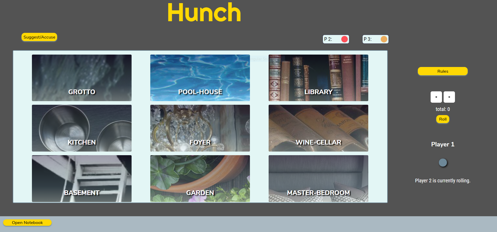

Hunch
React | Context | Sockets | SCSS
- Developed a virtual board game replicating Clue to provide zero cost ad free user entertainment
- Collaborated with a team of four as front end lead using Github Teams and Trello in a remote environment
- Integrated Sockets to allow multiple users to play at the same time
- Implemented close feedback loops to reduce conflicts with large data merges
